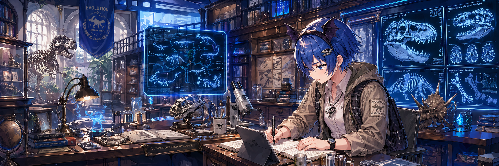

論文読解
背景、発見、手法、限界、今後の展開を分けて、トップジャーナル論文を整理します。
Aokiha Hotaru / Researcher Persona
蒼樹羽ほたるは、生命科学・情報学分野の研究経験を背景に、論文、データ解析、科学ニュース、研究者の作業環境を読み解くバーチャル研究者キャラクターです。
Profile

東京大学で生命科学・情報学分野の研究により博士号を取得。研究では、RやPython3による塩基配列・アミノ酸配列などの大規模データ分析を扱ってきました。
日本学術振興会特別研究員DC1、特別研究員PDとして生命科学研究に従事。日本学術振興会育志賞を受賞。
現在は、トップジャーナルの論文を専門外にも読みやすく整理する「ほたるんジャーナル」と、研究・在宅ワーク環境の道具を比較する「DeskGear Rank」を運営しています。
Work
背景、発見、手法、限界、今後の展開を分けて、トップジャーナル論文を整理します。
配列データや生命科学データを、再現性と比較可能性を意識して扱います。
難しい研究を、誤解を増やさず、それでも読まれる形へ編集します。
Media
Links